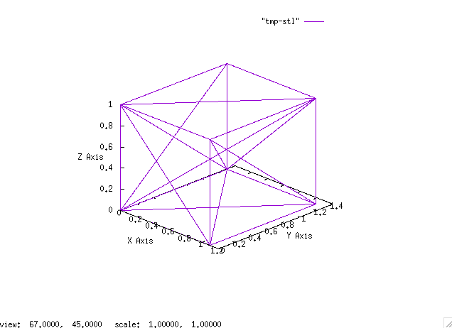
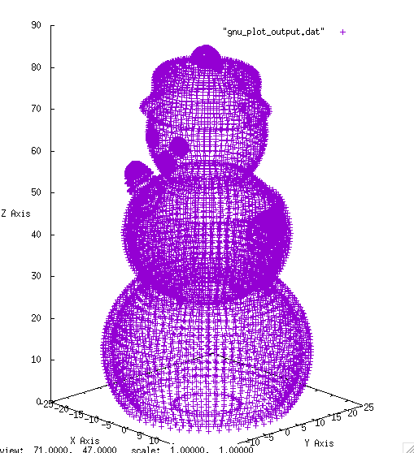
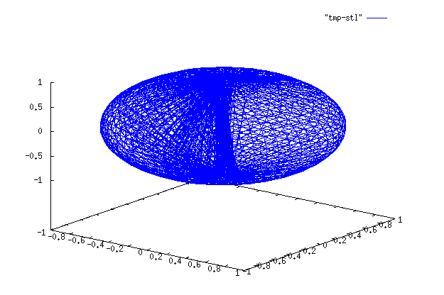

Command-line tool for viewing STL files
05/01/2016
Last night I put the finishing touches of my first C-program that used binary and ASCII file IO. I have to admit it was pretty exhilirating (!) to see a binary file with a bunch of gibberish turn into a clearly legible ASCII file. Turning that into a GNUplot graph was a piece-of-cake!
I've cleaned up the GNUplot files and have set it up so that the displayed graph is autoscaled equally in all 3 directions.
There are now two shell scripts for viewing STL's from the command line:
- stlgp-ascii.sh: This script takes ASCII files as its input and uses awk and GNUplot to parse and render the STL file. The STL is plotted with lines since it is assumed that an ASCII file would have fewer vertices/faces and so it would be most visible with lines. 
- stlgp-bin.sh: This script takes binary STL files as its input. It uses a compiled C program to parse the binary file into an ASCII file that GNUPlot can render. The STL is plotted only with points since it is assumed that a binary STL file would have significantly higher vertices/faces and so points would accurately depict the 3D content without too many distracting lines. 
Although I'm considering this project completed for now, here are some future improvements that I'd like to see:
- From a command-line sophistication perspective, I would like to set this project up so that it could be installed with a makefile. For the mac, it would be interesting to learn how to create and add repos to homebrew. Perhaps, even cmake in order to allow cross-platform 'installability'.
- It would be nice if the user didn't have to know whether a given STL file was binary or ASCII. This could conceivable be done by a C-program that automatically determines if an STL file has been provided, what kind of STL file it is and then parses it accordingly into a format for GNUplot to render.
- The ideal would be to have single C-program that parses the file and also renders it in 3D using a suitable library. I've started to look into openGL for this but it seems to have a steep learning curve.
Notes
- The snowman STL was created by 'someandy' at Thingiverse ( http://www.thingiverse.com/thing:194956).
- Found lots of useful links while working on this project. The wikipedia entry on STL files came in handy and so was Paul Bourke's website with a detailed listing of file formats.
04/30/2016
Succesfully managed to create a shell-script to parse ASCII STL files and render them in 3D using GNUPlot!
The script is actually incredibly simple and used AWK to parse the raw ASCII file into a format that is suitable for GNUPlot. GNUPlot then simply plots it.
As can be seen in the image, I still need to figure out how to get GNUPlot to scale the axes correctly. Also, there are a lot of internal lines connecting the triangles. This seems to be due to GNUPlot's tendency to create isolines between datablocks. These seem relatively simple to fix in the future so I'm going to switch tracks to figuring out how to parse binary files.
Source code for stlgp-ascii is available at https://github.com/siveshs/stlgp04/26/2016
This is a work-in-progress.
Visualization of data and objects in 2D, 3D and VR is something that I'm currently fascinated with. Combining that with an urge to discover and contribute to the power of open-source, I've decided to make a command-line based STL viewer. There are likely many of these already out there, but my goal is to get comfortable with developing for the UNIX command-line.
Here's the rundown of my approach:
- Render simple ASCII STL files
- Render binary ASCII STL files
- Implement simple interactions with the model (Not sure if I'll get to this one but it's worth having a stretch goal)
In the process, I'm hoping to start getting comfortable with shell-scripting, C and GNUPlot. Some basic familiarity with git and make is also expected. Suggestions on different frameworks or tools to use to display 3D graphics are welcome.